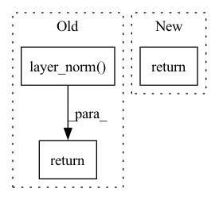

Pattern ID :12209
Before Change
def forward(self, input):
if not input.is_cuda or not HAS_LAYER_NORM:
return F.layer_norm(
input, self.normalized_shape, self.weight, self.bias, self.eps)
return FusedLayerNormFastFunction.apply(
input, self.weight, self.bias, self.normalized_shape, self.eps)
def extra_repr(self):After Change
init.zeros_(self.bias)
def forward(self, input):
return self.func(input)
def extra_repr(self):
return "{normalized_shape}, eps={eps}, " \In pattern: SUPERPATTERN
Frequency: 4
Non-data size: 3
Instances Fragment ID: 41342352
Project Name: dptech-corp/uni-core
Commit Name: cf5037607df38e4a817918c7ae566f7a815ba58b
Time: 2022-08-24
Author: guolin.ke@outlook.com
File Name: unicore/modules/layer_norm.py
M Class Name: LayerNorm
N Class Name: LayerNorm
M Method Name: forward(2)
N Method Name: forward(2)
M Parent Class: torch.nn.Module
N Parent Class: torch.nn.Module
M File Name: unicore/modules/layer_norm.py
N File Name: unicore/modules/layer_norm.py
M Start Line: 66
M End Line: 70
N Start Line: 78
N End Line: 78
Before Change
x = self.fc(x)
x = self.dropout(x)
x = x + projected
x = self.layer_norm( x)
return x
class CLIPModel(nn.Module):After Change
def forward(self, x):
projected = self.projection(x)
return projected
class CLIPModel(nn.Module): Fragment ID: 41342350
Project Name: kr-happyface/kodalle
Commit Name: b5e3b335a94fb2a32a1ba9925f29af7aad45aa93
Time: 2021-12-21
Author: shawn.khs1208@gmail.com
File Name: clipmodel.py
M Class Name: ProjectionHead
N Class Name: ProjectionHead
M Method Name: forward(2)
N Method Name: forward(2)
M Parent Class: nn.Module
N Parent Class: nn.Module
M File Name: clipmodel.py
N File Name: clipmodel.py
M Start Line: 87
M End Line: 93
N Start Line: 48
N End Line: 49
Before Change
def layer_norm(input_tensor, name=None):
Run layer normalization on the last dimension of the tensor.
return tf.contrib.layers.layer_norm(
inputs=input_tensor, begin_norm_axis=-1, begin_params_axis=-1, scope=name)
def layer_norm_and_dropout(input_tensor, dropout_prob, name=None):
Runs layer normalization followed by dropout.After Change
def layer_norm(input_tensor, name=None):
Run layer normalization on the last dimension of the tensor.
layer_norm = tf.keras.layers.LayerNormalization(-1)
return layer_norm(input_tensor)
def layer_norm_and_dropout(input_tensor, dropout_prob, name=None): Fragment ID: 41342351
Project Name: ppashakhanloo/codetrek
Commit Name: 8ab8d064bef0bf0ad2920aae9003b3141f51b40d
Time: 2021-07-08
Author: ppashakhanloo@gmail.com
File Name: data_prep/baselines/CuBERT/model/modeling.py
M Class Name: AnonimousClass
N Class Name: AnonimousClass
M Method Name: layer_norm(2)
N Method Name: layer_norm(2)
M Parent Class:
N Parent Class:
M File Name: data_prep/baselines/CuBERT/model/modeling.py
N File Name: data_prep/baselines/CuBERT/model/modeling.py
M Start Line: 347
M End Line: 348
N Start Line: 347
N End Line: 348
Before Change
self.register_buffer("beta", torch.zeros(dim))
def forward(self, x):
return F.layer_norm( x, x.shape[-1:], self.gamma, self.beta)
class ChanLayerNorm(nn.Module):
def __init__(self, dim, eps = 1e-5):After Change
var = torch.var(x, dim = -1, unbiased = False, keepdim = True)
mean = torch.mean(x, dim = -1, keepdim = True)
return (x - mean) * (var + self.eps).rsqrt() * self.g
class ChanLayerNorm(nn.Module):
def __init__(self, dim, eps = 1e-5, stable = False): Fragment ID: 41342349
Project Name: lucidrains/imagen-pytorch
Commit Name: 5fca6872dad964bc20f6213aec267487cafc1a77
Time: 2022-07-18
Author: lucidrains@gmail.com
File Name: imagen_pytorch/imagen_pytorch.py
M Class Name: LayerNorm
N Class Name: LayerNorm
M Method Name: forward(2)
N Method Name: forward(2)
M Parent Class: nn.Module
N Parent Class: nn.Module
M File Name: imagen_pytorch/imagen_pytorch.py
N File Name: imagen_pytorch/imagen_pytorch.py
M Start Line: 380
M End Line: 380
N Start Line: 381
N End Line: 386